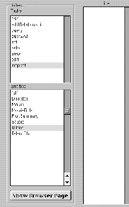
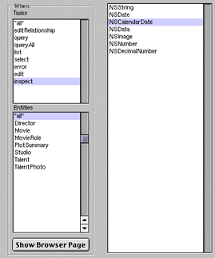

Table of Contents
Table of Contents  Next Section
Table of Contents
Next Section
Table of Contents  Previous Section
Previous Section

If you select "*all*" under Tasks, any changes you make affect all customizable pages for the selected entity. If you select "*all*" under Entities, you'll see a list of data types that exist in the application, as shown in the following figure.

Any changes you make affect all occurrences of that type. For example, the figure shows NSCalendarDate selected. You can specify a formatter, and pick a component to use anywhere in the application that an NSCalendarDate object is displayed.
If you click Show Browser Page, the task and entity for the current browser page are selected in the WebAssistant.
You can also select the Customize Page display of the WebAssistant while in Expert mode and change the underlying component, color, and border thickness of whatever page for whatever entity you select in the Tasks and Entities browsers.
Table of Contents Next Section